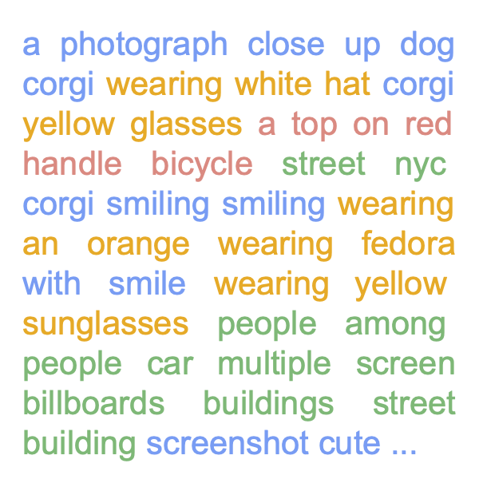
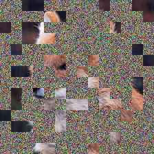
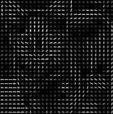
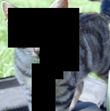
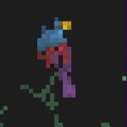
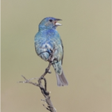

Chen Wei
I am an Assistant Professor of Computer Science at Rice University.
I completed my Ph.D. at Johns Hopkins University, advised by Bloomberg Distinguished Professor Alan L. Yuille. After my PhD, I joined Meta FAIR as a postdoctoral researcher. During my doctoral studies, I also interned at Google DeepMind and Meta FAIR. I received my B.S. with honors from Peking University EECS.
[Hiring] We welcome graduate and undergraduate interns to join our projects. Feel free to drop me an email!
{kind=link}
Research
My research asks: how can AI learn to see, reason about, and act in the visual world with minimal supervision? I approach this from three angles:
- Visual Representation Learning: building foundational visual encoders (iBOT, MaskFeat, Perception Encoder) that power downstream perception at scale.
- Generative World Models: using generative models not just to create, but to understand: learning representations from diffusion (DiffMAE, De-Diffusion) and generating explorable worlds (GenEx).
- Agentic Vision: enabling models to reason and act through vision, from game-based reasoning (Play to Generalize) to tool-augmented visual agents (PyVision-RL).
News
- 2026 Co-organizing the CVPR 2026 Workshop on World Models Meet Active Sensing and Closed-Loop Planning.
- 2026 Selected as an AAAI New Faculty Highlight.
- 2026 Congratulations to Yunfei Xie — Play to Generalize accepted to ICLR 2026!
- 2025 Perception Encoder accepted to NeurIPS 2025 as Oral presentation.
- 2025 Congratulations to Yunfei Xie for receiving the Lambda Research Grant ($10,000) for his work on Play to Generalize.
- 2025 Joined Rice University as Assistant Professor of Computer Science.
Selected Publications

Yunfei Xie, Yinsong Ma, Shiyi Lan, Alan Yuille, Junfei Xiao, Chen Wei
ICLR, 2026
arXiv / project page / code

Shitian Zhao, Shaoheng Lin, Ming Li, Haoquan Zhang, Wenshuo Peng, Kaipeng Zhang†, Chen Wei†
arXiv, 2026
arXiv / project page / code
Shitian Zhao, Haoquan Zhang, Shaoheng Lin, Ming Li, Qilong Wu, Kaipeng Zhang†, Chen Wei†
NeurIPS 2025 Workshop on Multi-Turn Interactions in LLMs
arXiv / project page / code

Daniel Bolya*, Po-Yao Huang*, Peize Sun*, Jang Hyun Cho*, Andrea Madotto*, Chen Wei, Tengyu Ma, Jiale Zhi, Jathushan Rajasegaran, Hanoona Rasheed, Junke Wang, Marco Monteiro, Hu Xu, Shiyu Dong, Nikhila Ravi, Daniel Li, Piotr Dollár, Christoph Feichtenhofer
NeurIPS, 2025 Oral
arXiv / code / Meta AI Blog
Taiming Lu, Tianmin Shu, Junfei Xiao, Luoxin Ye, Jiahao Wang, Cheng Peng, Chen Wei, Daniel Khashabi, Rama Chellappa, Alan Yuille, Jieneng Chen
ICLR, 2025
arXiv / genex.world / code

Chen Wei, Chenxi Liu, Siyuan Qiao, Zhishuai Zhang, Alan Yuille, Jiahui Yu
CVPR, 2024
arXiv / project page

Chen Wei, Karttikeya Mangalam, Po-Yao Huang, Yanghao Li, Haoqi Fan, Hu Xu, Huiyu Wang, Cihang Xie, Alan Yuille, Christoph Feichtenhofer
ICCV, 2023
arXiv / project page / press



